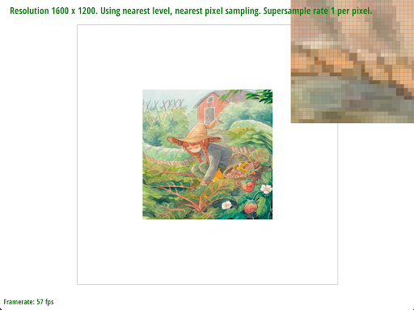

In this homework, we created a simple rasterizer with the bedrock feature of drawing triangles, complimented with additional features of hierarchical transforms, texture mapping, and improved graphics through antialiasing. In total, our rasterizer can take in SVG files and ultimately render them with user-configurable measures like supersampling rates, level sampling, and pixel sampling. Overall, there were many things we took away from this assignment. Firstly, it is apparent that there are many edge cases and strange one-offs in graphics that demand detailed attention when coding out a rasterizer. For example, ensuring that the edges of the triangles are accounted for, keeping in mind unit conversion between texture & world spaces, etc. Secondly, it was very interesting to see how much detailed work goes into the simple rasterization of an image that may appear bland and without much detail. Before embarking on this project, it would seem that the process would be as simple as iterating over the pixels in the frame and filling them with the desired color. After implementation, it is clear that there is a significant amount of work that occurs, well beyond initial expectations. Finally, the last takeaway is that there are many ways to implement a rasterizer. We could have used a multitude of sampling methods, antialiasing methods, and much more. Undoubtedly the field of graphics comes up with many different methods, with their own respective pros and cons, and choosing the method to implement for the project is critical itself.
To rasterize a triangle, you find the minimum x and y coordinates and maximum x and y coordinates to define the limits of the bounding box. Then, iterate through each pixel inside the bounding box, checking whether that pixel is within the triangle by performing the three line test. Lastly, fill the pixel if all three line tests result in a 0 or greater value (meaning it is either on the border or within the triangle). The specific line test we use depends on if the winding order of the vertices is clockwise or counterclockwise, which we determine by finding the cross product between two triangle vertices before iterating through the bounding box. Our algorithm is no worse than checking each sample within the bounding box because we restrict our iteration to be confined within the minimum and maximum x and y coordinates of the three vertices, meaning we do not check every pixel in the frame buffer. This is significantly more efficient, allowing for faster rasterization.
|
|
Supersampling is useful as an intuitive method of antialiasing, or reducing jaggies in an image. We used supersampling to antialias triangles by taking a higher resolution version of the image (recorded in the sample buffer), taking sample buffer points per frame buffer pixel, averaging the color values at those sample buffer points, and writing that averaged color to the frame buffer pixel for every frame buffer pixel. Our supersampling algorithm first performs three line tests on triangles that are drawn onto the sample buffer that has been scaled to the sampling rate. Then, when writing to the frame buffer, for every group of pixels in the sample buffer corresponding to a single pixel in the frame buffer, we take the average color value of that group of sample buffer pixels and write it to the frame buffer pixel. To account for supersampling in our rasterization pipeline, we translated the frame buffer coordinates passed into rasterize_triangle to sample buffer coordinates by multiplying them by sqrt(sample rate). Then, in resolve_to_framebuffer, we iterate through the sample buffer coordinates for every frame buffer coordinate, averaging the rgb values. We also updated the sample buffer size to height * width * sqrt(sample rate) inside of set_sample_rate and set_framebuffer_target. Lastly, in fill_pixel, we added for loops that fill the group of sample buffer coordinates corresponding to the frame buffer pixel that is passed in.
|
|
|
|
|
The reason that a sample rate of 16 appears smoother than sample rate 4, which is smoother than sample rate 1 is because the higher the sample rate, the more high resolution/contiguous the sample buffer will be. Therefore the average color value per super sample pixel group for higher sample rates will more closely visually represent a more contiguous image. One challenge that we encountered in this task was working with numerical data types when indexing into the sample buffer. Our code would segfault even though our logic and for loops were correct; however, we eventually discovered through trial and error that we had to cast all coordinates and square root operations to integers to ensure that values used to index into the sample buffer were not floats or doubles.
For this task, we implemented three functions that represented the three transforms: translate, rotate, and scale. Given the x and y translation distances, rotation degrees, and scale ratios respectively, we return 3x3 matrices in accordance with the matrices related to each of the transforms. One key of our implementation was converting the degrees parameter to radians so that the rotate function would work effectively!
We’re making cubeman dab! We did this through rotation of his arms and also changed his color to a cool green!
We used the same code from Task 2 rasterize_triangle, except we replaced the single color value with color values weighted by the barycentric coordinate at each sample buffer location. To calculate barycentric coordinates, we used the formulas on slide 23 of lecture 5. Barycentric coordinates represent the location of a point within a triangle relative to the triangle’s vertices. They also correspond to the proportional area of the triangle if the triangle was to be divided into three at that point. As shown in the image below, the barycentric coordinates are used to interpolate red, green, and blue values at each point within the triangle.
An issue we came across while working on this task was initially overlooking rasterization boundaries. There were white lines going through the color wheel image, which we fixed by deleting a “-1”, which made the for loop iterations inclusive of the edges of the triangles being rasterized.
In this task, we implemented pixel sampling for texture mapping through both nearest pixel sampling and bilinear filtering. In rasterize_textured_triangle(), we compute the bounding box, check if the point is within the triangle, and fill out the SampleParams struct based on the user’s chosen sampling method. We then convert to barycentric coordinates and subsequently call one of two helper methods depending on if the user wishes to use nearest or bilinear. In the two helper methods, the logic is similar: retrieve the color of the desired texel (after converting to the corresponding coordinates) and use that to return a color. In the case of nearest sampling, the work is very simple and we simply return the closest pixel’s color, whereas we implement linear interpolation for bilinear sampling. Pixel sampling is the way in which we retrieve color values for a frame buffer pixel by taking those frame buffer coordinates, converting them to barycentric coordinates, and finally converting those to texture image u,v coordinates. Nearest pixel sampling is very similar to what the name suggests: simply taking the closest (distance-wise) texel’s color and using that. Conversely, bilinear filtering is taking a weighted average of the 4 nearest texels to the point at which we are sampling. An intuitive way of thinking about it is that depending on how close/far a point is to its nearest 4 texels, those texels will proportionately contribute more/less to the sample’s color.
In the above pictures, we have zoomed in on the window of the Campanile to demonstrate the better rasterization with less aliasing that bilinear interpolation provides. In both supersampling rates of 1 and 16 per pixel, the bilinear interpolation provides improvement over nearest pixel sampling. The difference is particularly stark with the supersampling rate of 1, as the edges of the windows are noticeably better, without much of the random pixels of sky and jaggies, between bilinear and nearest pixel sampling. With the supersampling rate of 16, the difference is not as dramatic but still shows improvement from nearest to bilinear. There will be a large difference between nearest and bilinear when there are sudden changes in short spans (high frequencies), aka dramatic color shifts. This intuitively makes sense as bilinear filtering is going to blur this change by sampling the nearest four texels (think of a corner of a house contrasted with the sky) whereas nearest pixel will only take a singular color vector for its value. Intuitively then, bilinear will be blurrier than nearest pixel which may have sharp and dramatic color changes. One roadblock we came across in our implementation was using the Color vectors in the bilinear filtering method. The library does not support the subtraction of colors, so we implemented a workaround by multiplying the second Color by -1, and adding that to the first.
Level sampling is the sampling of different levels of mipmaps of a texture. Mipmap levels are essentially lower resolution versions of a given texture image. Calculating the appropriate mipmap level to use for level sampling is dependent on the type of mipmap sampling, whether it is constant (always from 0th mipmap level), nearest mipmap level, or linear interpolation of two nearest mipmap levels. We implemented level sampling by first calculating the barycentric coordinates for the coordinates (x, y), (x+1, y) and (x, y+1), which we used to populate a SampleParams struct inside of rasterize_textured_triangle. This struct is then passed into the texture sample function. Inside of the sample function, we computed the appropriate level based on the type of pixel sampling (psm) and level sampling (lsm) that is selected. If lsm is nearest or linear, we use the get_level sample function which returns a decimal D level value using the distance equation from lecture 5. If lsm is nearest, we simply round the value to the nearest integer, and if it is linear, we linearly interpolate the two nearest mipmap values by taking a weighted sum of the colors at the respective mipmap texels. Comparing the tradeoffs between pixel sampling, level sampling, and supersampling: Pixel sampling is the most memory efficient since it only requires memory for one texture image and a sample buffer the size of the frame buffer. The computation for pixel sampling is not particularly intensive either, as there are only a few constant time operations for each pixel to calculate its color value. However, using pixel sampling on its own does result in some aliasing. Level sampling requires some memory overhead since multiple mipmaps are stored, but has lower computational overhead, since there are only a few constant time operations per pixel (indexing into and potentially interpolating mipmap values). The greater memory usage, however, is compensated by greater antialiasing power. Lastly, supersampling has higher memory overhead because of the large sample buffer size as well as higher computation overhead than the other two methods since the sample buffer has to be iterated through after being populated and averages of pixel groups are calculated to fill the frame buffer. The more samples per pixel taken, the higher the memory and computational power necessary, but also the higher antialiasing power becomes. An issue that we encountered while working on task 6 was that we discovered zooming in and out of images caused segfaults. This was an issue that was present due to errors in a previous part, but we did not uncover it until attempting to zoom in on texture images. We found that we were not properly bounds checking coordinates in the three rasterize triangle functions, and we added those bounds checks which resolved the issue.
Below, are images of lsm=0 psm=nearest, lsm=0 psm=linear, lsm=nearest psm=nearest, lsm=nearest psm=linear, respectively.
